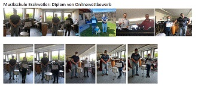
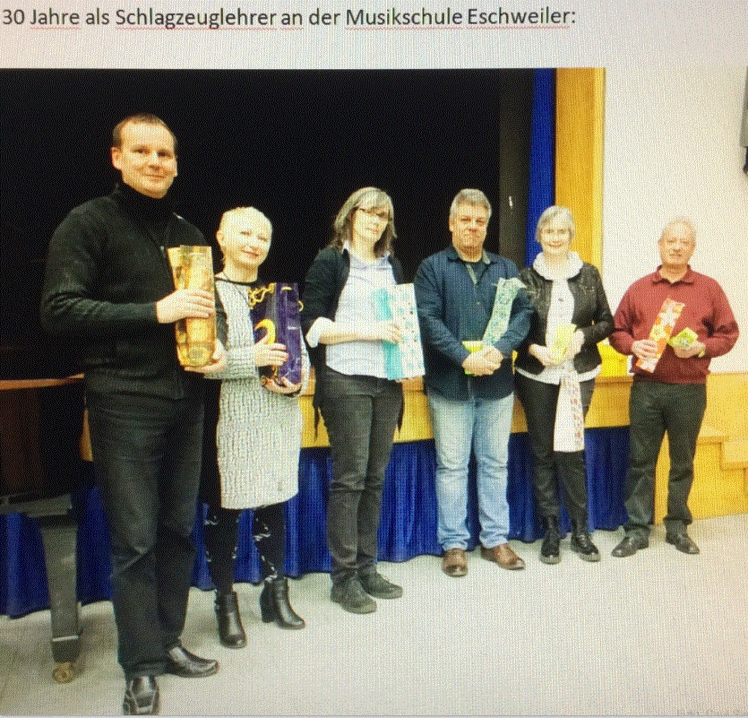
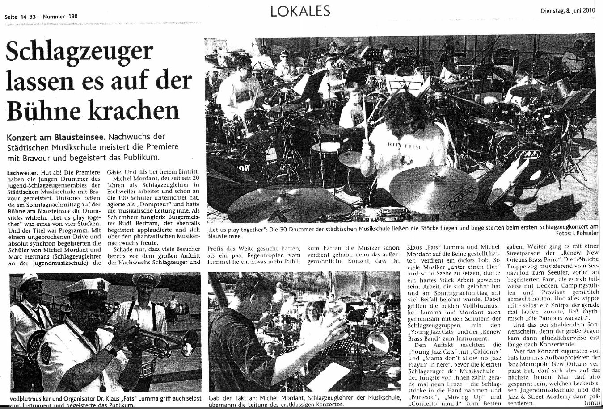

Germany · founded 1996
Percussion Ensemble Jugendmusikschule Eschweiler
Founded on 5 July 1996 by Michel Mordant. In 2019 he celebrated more than thirty years as percussion teacher at the music school in Eschweiler.
- 2027
17 January · Heinsberg (in preparation)
- Brazilian Street Dances — T. O’Connor
- You’re So Cool — H. Zimmer, arr. F. Kessels
- Sabre Dance — A. Khachaturian (arr. J. Moore, M. Mordant)
Together with the JuMu Ensemble (Burkhard, Tobias, Fynn, Jonas, Tom, Arne): Drummers Go Latin; The Winding River (T. O’Connor); Pirates of the Caribbean (Hans Zimmer, arr. M. Mordant).
23 January · Heinsberg (in preparation)
Jugend Musiziert: Drummers Go Latin; The Winding River (T. O’Connor); Pirates of the Caribbean (Hans Zimmer, arr. M. Mordant).
- 2026
10 October · Adams
Percussion & Friends: Egyptian Reggae (J. Richman); You’re So Cool (H. Zimmer, arr. F. Kessels); Sabre Dance (A. Khachaturian, arr. J. Moore, M. Mordant).
6 September · Blausteinsee
Family day of the city of Eschweiler at Lake Blaustein.
16 July
Music school recital (Vorspiel).
January – March
Jugend Musiziert, drumset (pop): three members take part.
- 2025
18 December
Christmas concert: Brazilian Street Dances, Sabre Dance, You’re So Cool.
January – March
Jugend Musiziert, percussion / mallets: five members take part.
- 2024
23 October · Adams
Percussion & Friends, in cooperation with the Percussion Ensemble Broeksittard. Photo
2 October
Nacht der offenen Kirchen: You’re So Cool (H. Zimmer, arr. F. Kessels); Rainbows (A. Gomez).
- 2023
- Concert at the Blausteinsee
- Concert “Am Markt”: Jumpin’ Five (1942) by W. Ludwig
- Concert for the Day of Volunteering (Tag des Ehrenamtes), Eschweiler: The Entertainer
- 2020
Corona year: online percussion competition.

- 2019
More than 30 years of percussion teaching in Eschweiler. Press reports (PDF)

- 2010
“Drumming” at the Blausteinsee — 7 June, with press coverage in Super Sonntag and the Eschweiler Filmpost. Programme (PDF) · Poster (PDF) ·

“30 Schlagzeuger rocken am Samstag die Seebühne” 
“30 Drummer schlagen Wellen am See” 
Eschweiler Filmpost 
“Schlagzeuger lassen es auf der Bühne krachen” 
Super Sonntag — “Drums as Drums can” 
Aachener Zeitung (az-web.de) - 2009
The ensemble · Eschweiler Nachrichten, 19 June 2009 · Concert poster, 14 June 2009
- Mission Impossible — Lalo Schifrin, arr. Will Rapp
- Drumduet — Maarten Rongen
- A La Turca — W. A. Mozart, arr. Michel Mordant
- Dreaming — Leo Ouderits
- 2008
No ensemble this year: no rehearsal room available following the introduction of the all-day school.
- 2006
14 May — concert at the PAS Day of Percussion, Maastricht (the Netherlands): Centurion March (M. A. Brand); Minimize (M. Mordant); William Tell Overture; Sabre Dance.
22 June — concert.
- 2005
Timo Coutura.
- 2004
- Concert, 24 June, Eschweiler (Germany)
- Concert, 5 November, Voerendaal (the Netherlands)
- 2003
“Jugend Musiziert”, 1 February, Wuppertal (Germany):
- Interplay — G. Whaley
- Minimize — M. Mordant
- Drummers Go Latin — P. Hudec
- Trommeldans — L. Ouderits, arr. M. Mordant
- 2002
Press: Eschweiler Nachrichten, 24-12-2002 · Eschweiler Nachrichten, 24-01-2002 · Super Mittwoch, 27-02-2002 · AZ Eschweiler, 26-01-2002
Concert at the Marimba Contest 2002 — programme of the opening concert, 17 August, Cultural Centre Hasselt (Belgium).
Concert hall, School of Music Stolberg (Germany): The Winding River (Thomas O’Connor); Alla Turca (KV 331, W. A. Mozart, arranged for marimba ensemble by M. Mordant); Dreaming (L. Ouderits); Sabre Dance (A. Khachaturian / J. Moore).

Playing Mozart’s Alla Turca (KV 331), arranged for marimba ensemble by Michel Mordant. - 2000
Concert hall “Patternhof”, Eschweiler
The Winding River (Thomas O’Connor); Drummers Go Latin (Peter Hudec); A La Samba (Mitchell Peters); Allegretto (W. A. Mozart); Mau-Mau Suite (T. Davis); Sabre Dance (A. Khachaturian / J. Moore).
Eschweiler Zeitung: 8 November 2000 · 7 November 2000

Johannes Arnouts, Timo Coutura, Oliver Lamm, Volker Kupper, Christoph Frings and Michel Mordant. Vibraphone: Lucas Stolberg. 17–22 March · Cologne
“Jugend Musiziert” (state competition): Drummers Go Latin (Peter Hudec); A La Samba (Mitchell Peters); The Winding River (Thomas O’Connor); Praça Mauá (Heinz von Moisy).
24 January · Mönchengladbach
“Jugend Musiziert” — same programme. Eschweiler Zeitung: 1 February 2000 · 28 January 2000
- 1999
- Exhibition “Schlucklick”, 19 November, Eschweiler: The Winding River; Drummers Go Latin; Allegretto (Mozart)
- Concert in Achel (Belgium): The Winding River; Drummers Go Latin; Allegretto (Mozart)
- 1996